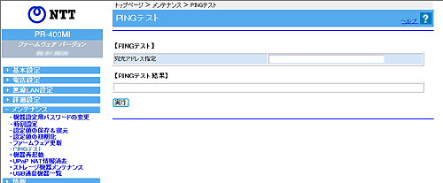

| 指定したIPホストに対してICMP Echoメッセージを使ったPINGテストを行います。 WAN側またはLAN側のIPv4ホスト/IPv6ホストに対してPINGテストを実施できます。 |
| ※「Web設定」画面に表示されているボタンについての説明は こちら |
|  |
 宛先IPアドレス 宛先IPアドレス |
|
| PINGテストの対象となるホストのIPアドレスを入力します。 | |
| 入力例） IPv4の場合：xxx.xxx.xxx.xxx |
|
| IPv6の場合：xxxx:xxxx:xxxx:xxxx:xxxx:xxxx:xxxx:xxxx | |
| 1. | PINGテストの対象となるホストのIPアドレスを入力する |
|---|---|
| 2. | ［実行］をクリックする 数秒後にPINGテスト結果が表示されます。 |
テスト結果に「0% packet loss」という表示があれば、OKです。 この表示が無ければ、NGです。